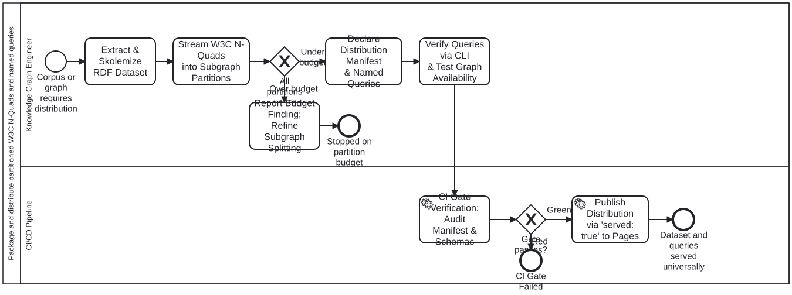

Generated from
cat-harness/skills/kg/graph-management/nquads-distribution.md— do not edit here.
W3C N-Quads Dataset Packaging & Subgraph Distribution
This skill governs the compilation, subgraph partitioning, packaging, and distribution of RDF datasets formatted as W3C N-Quads (application/n-quads) paired with audited, pre-compiled SPARQL 1.1 named queries.
It provides a single source of truth across CLI, MCP tools, and static client-side web applications, enabling sub-second multi-graph query evaluation without running dynamic database servers.
1. Architectural Principles
1.1 W3C N-Quads Standards Conformance
- Specification: Conforms strictly to W3C RDF 1.1 N-Quads (
w3c-n-quads). - Format: Line-based statement serialization:
subject predicate object graphLabel? . - Zero Engine Lock-in: Oxigraph is the execution engine; the data format is strictly vendor-neutral W3C RDF. Any conforming triplestore/quadstore (Jena, Comunica, GraphDB) can consume these files directly.
1.2 Upstream Skolemization (Zero Blank Nodes)
- Blank nodes (
_:b0) clobber each other across distributed documents and cannot be referenced across partitions. - Rule: Every compound node (e.g. Dublin Core qualified statements, MeSH authorities, bean notes) must be deterministically skolemized at intake into a stable URI:
https://<domain>/entity/<id>#<property>_<index>. - Invariant: The dataset contains zero blank nodes (
_:).
1.3 2-Tier Subgraph Partitioning
To prevent browser V8 heap exhaustion on edge devices, datasets are never delivered as a single monolithic multi-gigabyte dump. They are partitioned into two tiers:
- Tier 1: Global Routing Spine (
<dataset>/spine):- Contains the top-level hierarchy, IDs, titles, primary categories, and access gate verdicts.
- Target payload: < 50 KB gzipped. Loaded instantly on application bootstrap.
- Tier 2: Subgraph Partitions (
<dataset>/subgraph/<id>):- Contains detailed entity graphs (e.g. full Dublin Core metadata per DSpace community, or historical task audit logs).
- Loaded additively and on demand when an agent or user accesses that domain.
1.4 Partition Size Budget
- Budget Ceiling: No partition may exceed 50,000 quads or 5 MB gzipped (enforced by
MAX_RECOMMENDED_PARTITION_BYTESinschemas/kg/nquads-distribution.ts). - Protects mobile Safari and Chromium from OOM crashes during WASM decompression.
1.5 Git Hygiene: No Binaries in Repo
- Compiled
.nqand.nq.gzfiles are never committed to Git. - They are generated during CI build or local execution into an ephemeral output directory, and served to GitHub Pages via
mount-instance-docsthrough"served": true.
2. Checkable Requirements
| # | Requirement | Why, in one line |
|---|---|---|
| NQ-1 | Strict W3C N-Quads Compliance | Prevents proprietary dialect lock-in; interoperable with any RDF store |
| NQ-2 | Zero Blank Nodes via Deterministic Minting | Blank nodes collide across document boundaries; stable URIs join cleanly |
| NQ-3 | Zero Binary Bytes in Quads | Keeps the graph lightweight; PDFs/images live in static CDN storage |
| NQ-4 | Partition Budget Cap (< 5 MB gzipped / 50k quads) | Prevents V8 heap exhaustion on mobile and edge devices |
| NQ-5 | Topology Manifest (subgraph-manifest.json) | Informs clients of partition quad counts, item counts, and relative URLs |
| NQ-6 | Pre-compiled Named Queries (queries.json) | Replaces arbitrary runtime queries with audited, injection-proof SPARQL |
| NQ-7 | Served via Instance Declaration (served: true) | mount-instance-docs.ts publishes files to _site/ without manual copy steps |
| NQ-8 | Single Source of Truth | CLI, MCP tools, and web browsers consume the exact same .nq.gz files |
3. Concrete Implementations
Implementation A: Document Repository Library Catalogue
- Compiler:
scripts/build-oxigraph.ts - Spine Graph:
<https://example.org/graph/spine>$\to$catalogue-spine.nq.gz(communities, collections, handles, titles, copyright gates). - Subgraph Partitions:
<https://example.org/graph/community/{id}>$\to$community_{id}.nq.gz(Qualified Dublin Core, descriptors, spatial coverage). - Queries:
search_by_mesh,filter_by_community,licensed_bitstreams. - Declared Served Directory:
dist/oxigraph/with"served": truein instance configuration.
Implementation B: Folio Assistant Beans Work Plan
- Compiler:
cat-harness-tools/scripts/beans-query.ts - Spine Graph:
<https://folio-assistant.org/graph/beans>$\to$beans-spine.nq.gz(all 1,600+ beans with IDs, status, parents, and dependency edges). - Subgraph Partitions:
<https://folio-assistant.org/graph/beans/claims>$\to$claims.nq.gz(session claims, burndown history, and audit records). - Queries:
safe_drain_candidates,actionable_leaves,critical_path_blockers,rollup_invariant_violations,circular_blockers. - Declared Served Directory:
beans/dist/with"served": trueinbeans.json.
Processes that run this skill
This skill has its own process: Package and distribute partitioned W3C N-Quads and named queries.

| process | step(s) that name it |
|---|---|
| Package and distribute partitioned W3C N-Quads and named queries | Extract & Skolemize RDF Dataset; Stream W3C N-Quads into Subgraph Partitions; Report Budget Finding; Refine Subgraph Splitting; Declare Distribution Manifest & Named Queries; Publish Distribution via ‘served: true’ to Pages |
| IRIS CDN initial load | Build the graph partitions (calls a sub-process) |
| IRIS CDN nightly change ingest | Rebuild the whole graph (sorted output) (calls a sub-process) |
| IRIS CDN weekly reconciliation | Rebuild the whole graph (sorted output) (calls a sub-process) |